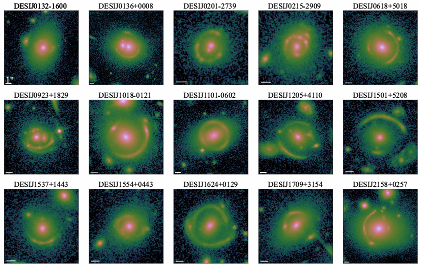
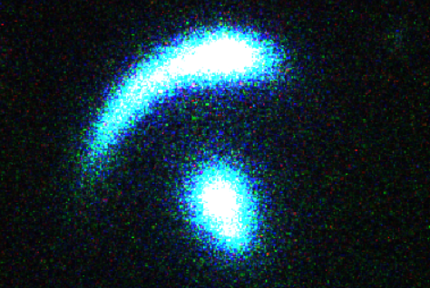
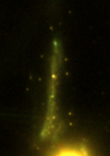

Publications & Current Projects

Investigating the relation between the environment and internal structure of massive elliptical galaxies using strong lensing
Supervisor: Dr. Anowar J Shajib; A&A, July 2025
This project explores how large-scale environments influence the internal structure of massive elliptical galaxies. By analyzing a sample of galaxy-galaxy strong lenses, we characterized the line-of-sight environment and estimated correlations between centroid offsets, position angle offsets, and the density of galaxies in the lens galaxy’s local environment. We robustly found no correlation between the mass-light centroid offset and local galaxy density; however, we discovered a moderate to strong correlation between the position angle offset and the standard definition of local galaxy density.

Resolved Metallicity and Age Gradients in the Lensed Quiescent Galaxy AGEL0014 at z≈1.4
Supervisor: Dr. Nicha Leethochawalit (Manuscript in preparation)
For my M.Sc. thesis, I am analyzing the spatially resolved stellar populations of the lensed quiescent galaxy AGEL0014 (z≈1.4) to constrain its formation and quenching mechanisms. Combining imaging data from HST and Gemini/GSAOI with spectroscopic data from Keck/MOSFIRE, I modeled the system using Lenstronomy. To robustly recover intrinsic stellar population trends, I forward-modeled source plane metallicity gradients by applying light-weighting and PSF convolution to the projected image-plane map to simulate slit data.
By performing full-spectrum fitting with ALF (Absorption Line Fitter), this analysis reveals a clear positive age gradient and a negative metallicity gradient. These signatures strongly support an outside-in quenching scenario: the core's high α-enrichment suggests it formed in a short, intense burst and quenched abruptly, whereas the iron-rich outskirts imply a more extended star formation history allowing for enrichment from Type Ia progenitors.

The study of stellar population of Sparkler galaxy
Supervisor: Dr. Lamiya Mowla (Ongoing)
I began this project during the ICTP PWF Bangladesh Summer Internship Program under Dr. Lamiya Mowla, and I am currently continuing this research as a Graduate Research Assistant working with cutting-edge JWST data. The focus of this study is the Sparkler galaxy—a strongly lensed system at z ≈ 1.4 and a follow-up to Mowla & Iyer et al. (2022)—where we aim to investigate what makes it distinct from other galaxies at similar epochs.
The study involves lens modeling and performing SED fitting of JWST/NIRCam data alongside JWST/NIRSpec IFU observations of its highly magnified (~10–100x) image using Dense Basis and piXedfit. By characterizing its internal properties and environment, we hope to understand how galaxies with LMC-like progenitor masses evolved around cosmic noon, ultimately providing context for how globular cluster (GC) populations evolved to the present day.
Contact Information
Email: ahmadal.imtiaz@gmail.com